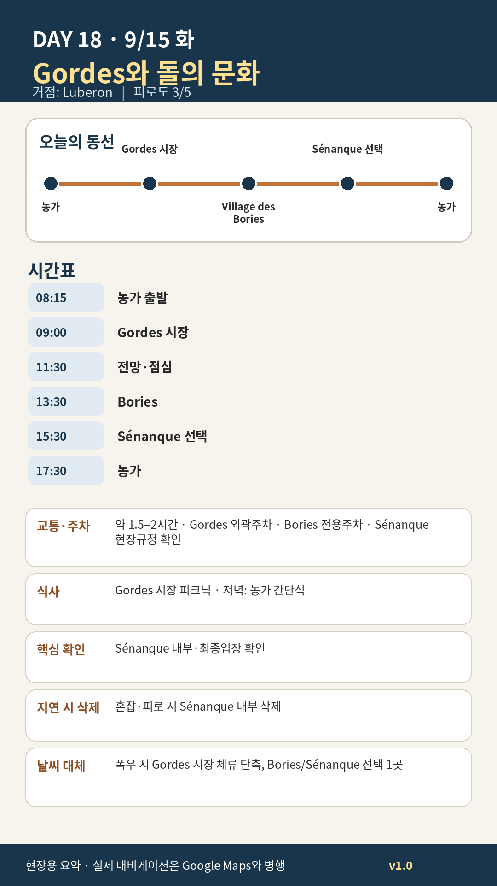

Day 18 · 9/15 화 · Luberon Phase 4 최종

카드의 지도영역은 일정 순서를 보여주는 개요이며 내비게이션이 아닙니다. 실제 도보·운전 경로는 Google Maps에서 다시 계산하세요.
시간표
이 날은 원고에 시각표가 없다. 구간 일정은 일정 한눈에 에 있다.
이 날의 메모
Gordes 시장, 석조마을, Bories와 Sénanque
Gordes 주차 실무
- 중심 주차는 07:00–08:30 사이 도착이 유리
- 공식 주차요금 안내: 30분 무료 티켓 필요, 4시간까지 €8, 4–11시간 €10
- 화요일 오전에는 마을 관통 운전을 강하게 피한다
- 주차장 이름보다 외곽 진입 후 도보 5–10분을 우선한다
오늘 꼭 해볼 것
- Gordes는 성 내부보다 마을 전체가 보이는 외부 전망점을 먼저 보기
- 시장에서 과일·치즈·올리브 외에 작은 도자·직물도 살펴보기
- Bories에서는 “예쁜 오두막”보다 농업·목축 생활에 어떤 공간이 필요했는지 생각하기
- Sénanque는 라벤더꽃 기대보다 12세기 수도원과 계곡의 적막을 경험하기
Sénanque 내부관람 판단
- 월–토 자율관람: 09:30–11:00 마지막 입장, 13:00–17:00 마지막 입장
- 성인 €8
- HistoPad가 한국어를 지원하므로 언어장벽은 낮다
- 다만 이번 여행 선호상 외관·계곡 30분만 보고 농가로 돌아가는 안도 충분히 좋다
삭제 우선순위
- Sénanque 내부
- Bories 내부
- Gordes 시장·마을은 유지
오늘 확인할 것
- 핵심 실행
- Gordes 시장·Bories·Sénanque
- 권장 출발
- 08:15 출발
- 완충
- 시장주차 30분
- 최고 리스크
- 시장혼잡·주차
- 우선 삭제
- Sénanque 내부
- 대체안
- Gordes+한 곳만
- 식사·휴식
- Gordes 피크닉
- 잠금 필요
- 시장·Sénanque
이 날의 장소
일자별 시간표와 본문 표기에서 찾은 것이다. 하루의 전부가 아니라 장소 카드가 있는 것만 담는다.